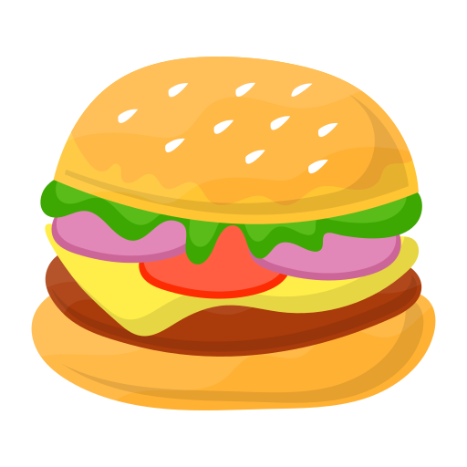
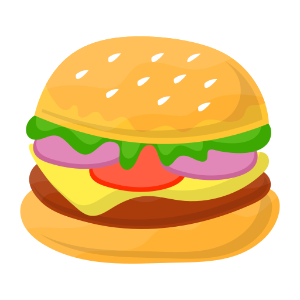

Nimble - Trabalho de Conclusão de Curso
Descrição: Nimble é um mercado virtual que eu fiz como projeto final do curso técnico. É o meu projeto de maior porte. Foi um desafio fazer ele, tanto na parte do front-end, mas principalmente no back-end. Durante a execução desse projeto, não tinha pleno conhecimento sobre o conceito de responsividade, portanto não a apliquei.
Descrição: Nimble é um mercado virtual que eu fiz como projeto final do curso técnico. É o meu projeto de maior porte. Foi um desafio fazer ele, tanto na parte do front-end, mas principalmente no back-end. Durante a execução desse projeto, não tinha pleno conhecimento sobre o conceito de responsividade, portanto não a apliquei.

Space Program - Minisite baseado na temática do espaço
Estava pensando em um projeto para colocar em prática minha evolução em HTML5/CSS3 e um pouco de Java Script, ao mesmo tempo que queria fazer algo com um design diferente. Foi ai que tive a ideia de fazer um site com uma temática do espaço, utilizando imagens em svg, com sombras brancas, o que deu um design unico para o site.
Estava pensando em um projeto para colocar em prática minha evolução em HTML5/CSS3 e um pouco de Java Script, ao mesmo tempo que queria fazer algo com um design diferente. Foi ai que tive a ideia de fazer um site com uma temática do espaço, utilizando imagens em svg, com sombras brancas, o que deu um design unico para o site.

 

Jogo da Memória
Descrição: Jogo da memória que fiz com Java Script puro. Não foi um projeto complexo, mas sem dúvidas evolui muito minha lógica de programação fazendo ele. O maior desafio nesse projeto foi tentar deixar o código com a menor quantidade de "If" possível, utilizando arrays em vez disso.
Descrição: Jogo da memória que fiz com Java Script puro. Não foi um projeto complexo, mas sem dúvidas evolui muito minha lógica de programação fazendo ele. O maior desafio nesse projeto foi tentar deixar o código com a menor quantidade de "If" possível, utilizando arrays em vez disso.
Projeto MeuLink - ReactJS
Descrição: Primeiro projeto que fiz em ReactJS, juntamente com o canal "SujeitoProgramador" O projeto consiste em um encurtador de Links.
Descrição: Primeiro projeto que fiz em ReactJS, juntamente com o canal "SujeitoProgramador" O projeto consiste em um encurtador de Links.
Mini Relógio em JS
Descrição: Projeto bastante simples que consiste em um relogio que mostra o dia e as horas atuais.
Descrição: Projeto bastante simples que consiste em um relogio que mostra o dia e as horas atuais.
Medidor de Velocidade - JS
Descrição: Projeto bastante simples que consiste em um acelerador, que pode ser segurado para aumentar a velocidade gradativamente. Após passar de 70km/h, os pontos na carteira começam a ser descontados.
Descrição: Projeto bastante simples que consiste em um acelerador, que pode ser segurado para aumentar a velocidade gradativamente. Após passar de 70km/h, os pontos na carteira começam a ser descontados.
XO
Jogo da Velha - JS
Descrição: Jogo da velha que fiz com Java Script. Foi o primeiro projeto um pouco mais "complexo" que fiz sozinho, por conta disso, tive vários obstáculos durante a execução, mas consegui fazer sem muitos problemas.
Descrição: Jogo da velha que fiz com Java Script. Foi o primeiro projeto um pouco mais "complexo" que fiz sozinho, por conta disso, tive vários obstáculos durante a execução, mas consegui fazer sem muitos problemas.
89 VS 76
Minigame - JS
Descrição: Minigame que fiz com JavaScript. O jogo consiste em sortear dois números de 0 até 100 (1 para o primeiro jogador e outro para o segundo), e o que tiver sorteado com o maior número, ganha.
Descrição: Minigame que fiz com JavaScript. O jogo consiste em sortear dois números de 0 até 100 (1 para o primeiro jogador e outro para o segundo), e o que tiver sorteado com o maior número, ganha.